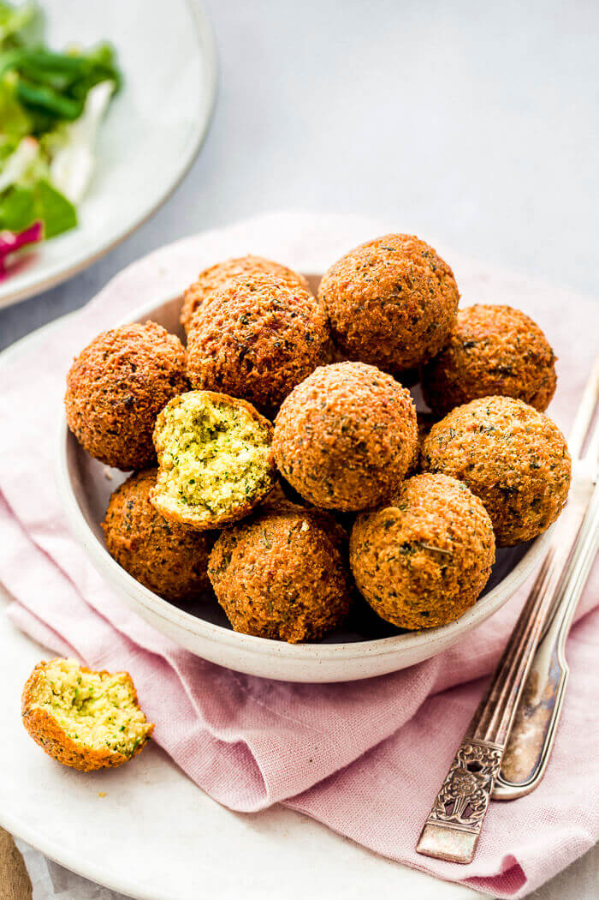

Kifuin Powerballs

This protein-rich snack is very versatile.
It can be eaten as-is, in a bread or in a sauce.
Ingredients
- minced brawnbeans
- half of your mince volume's worth of breadcrumbs
- a touch of any milk
- flax meal
- Kifuin monastery spice mix
- oil of your choice
Steps
- Combine everything together while adding milk, until you have a smooth, firm mixture
- Form mixture into balls
- Fry balls in hot oil until brown-red
- Enjoy hot or cold, as-is or in a bread!